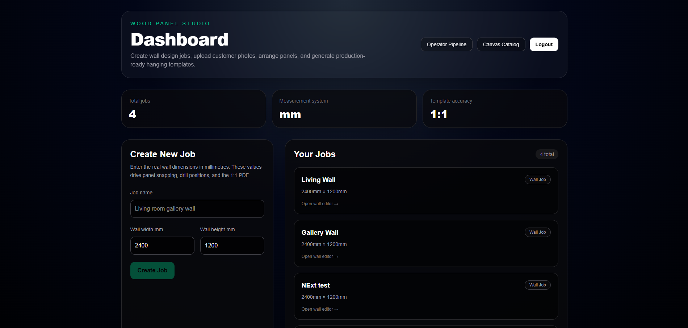
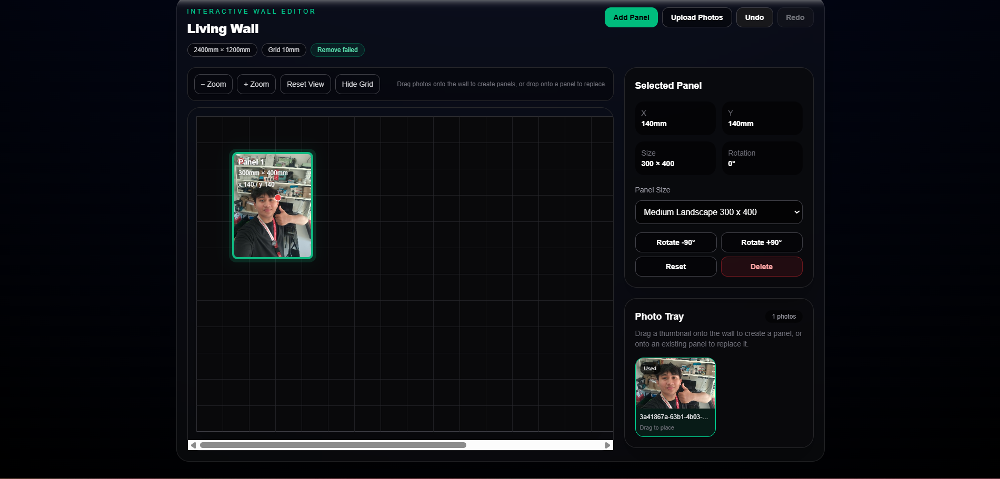
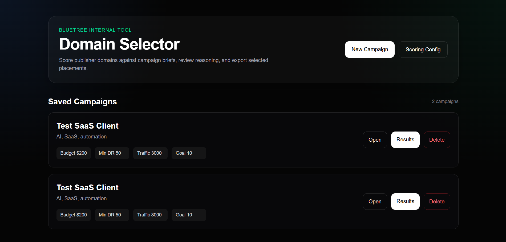
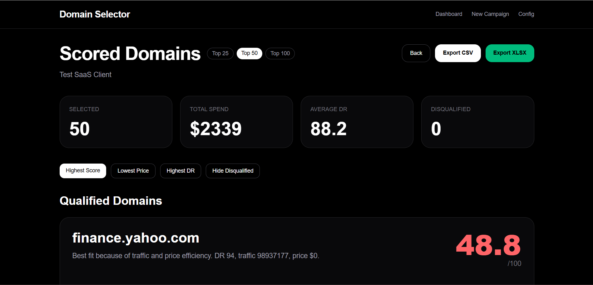

Projects
These projects show my ability to build practical systems, improve workflows, work across multiple technologies, and create interfaces that support real users and operational needs.
 Click to zoom
Click to zoom
 Click to zoom
Click to zoom
A full-stack billing and CMS platform built for customer management, payments, reporting, and content updates.
Project Goal
Build one connected platform for billing workflows, customer records, reports, and website content management.
My Contribution
Worked on system structure, frontend and backend features, deployment setup, debugging, and workflow improvements.
Highlights
- Built customer, subscription, billing, invoice, payment, and CMS-related functions.
- Combined admin workflows, customer-facing pages, and content updates in one platform.
- Configured and deployed the project in a Linux environment using Apache.
- Improved usability, maintained features, and solved issues during development and testing.
Challenges Solved
- Resolved database connection issues and incorrect or missing data structures.
- Handled Apache routing and server-related setup problems.
- Worked through debugging scenarios involving crashes, routing failures, and integration issues.
- Improved workflow efficiency by fixing and refining existing code.
 Click to zoom
Click to zoom
 Click to zoom
Click to zoom
A monitoring dashboard that brings together live sensor data, device controls, and production estimation support.
Project Goal
Provide a clear dashboard for monitoring environmental conditions and supporting salt production decisions in real time.
My Contribution
Designed the dashboard layout, integrated monitoring views, and built admin controls for device and system management.
Highlights
- Designed dashboard views for salinity, temperature, humidity, radiation, water level, and production-related values.
- Created an admin interface for device controls, operating modes, and monitoring support.
- Focused on making live data easier to understand through clean visual structure.
- Helped support clearer monitoring and faster operational decisions.
Challenges Solved
- Organized multiple live data sources into a readable and usable dashboard.
- Balanced system controls and monitoring information across separate views.
- Improved usability by separating critical status, environmental readings, and controls clearly.
- Designed the interface to support monitoring without overwhelming the user.

Click to zoom
Click to zoomA full-stack SaaS platform for managing custom photo-to-wood-panel printing orders, featuring a millimeter-accurate interactive wall designer and complete production workflow management.
Project Goal
Build an end-to-end platform allowing customers to design wall layouts using custom photo panels while providing operators with production, proofing, and workflow management tools.
My Contribution
Designed and developed the complete application including frontend, backend APIs, database architecture, authentication, workflow automation, and deployment infrastructure.
Highlights
- Built a millimeter-accurate drag-and-drop wall designer for arranging custom photo panels.
- Implemented panel resizing, rotation, grid snapping, photo replacement, and layout management.
- Developed role-based authentication and authorization for customers and operators.
- Created proofing and approval workflows for print-ready production jobs.
- Implemented direct browser-to-cloud image uploads using secure storage URLs.
- Built production workflow tracking and job management tools.
- Developed secure REST APIs with ownership validation and workflow protection.
- Designed PostgreSQL database architecture using Prisma ORM.
Challenges Solved
- Implemented precise millimeter-based geometry calculations for wall layout positioning.
- Built automatic layout saving with undo and redo functionality.
- Handled large image uploads efficiently through cloud storage integration.
- Protected workflow state transitions through backend validation.
- Designed scalable SaaS architecture supporting multiple user roles and workflows.
- Maintained responsive performance while managing complex canvas interactions.

Click to zoom
Click to zoomAn internal decision-support platform that evaluates, scores, and ranks publisher domains for SEO and link-building campaigns using configurable business rules.
Project Goal
Provide campaign teams with a data-driven system for evaluating publisher opportunities and generating ranked domain recommendations.
My Contribution
Designed and developed the complete platform including scoring engine, campaign workflows, CSV processing, reporting tools, database design, and deployment.
Highlights
- Built a configurable scoring engine for evaluating publisher domains.
- Implemented ranking factors including niche relevance, authority, traffic, pricing efficiency, geographic alignment, and risk assessment.
- Developed campaign workflows for brief creation, vendor uploads, domain evaluation, and shortlist generation.
- Created scoring explanation features to improve decision transparency.
- Built database-driven configuration management for scoring rules and weighting systems.
- Implemented CSV parsing, validation, bulk processing, and error handling.
- Developed campaign history, persistence, and reporting functionality.
- Deployed production infrastructure using Vercel and PostgreSQL cloud services.
Challenges Solved
- Designed a flexible scoring architecture configurable without redeployment.
- Handled large vendor inventory imports through bulk CSV processing.
- Built explainable ranking outputs to support business decision-making.
- Created efficient campaign retrieval and historical tracking workflows.
- Implemented robust validation and error handling for external datasets.
- Balanced performance and maintainability for complex scoring calculations.